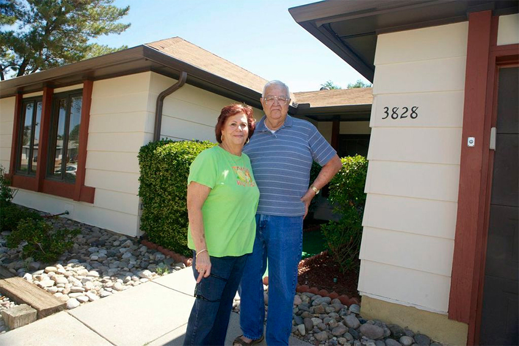
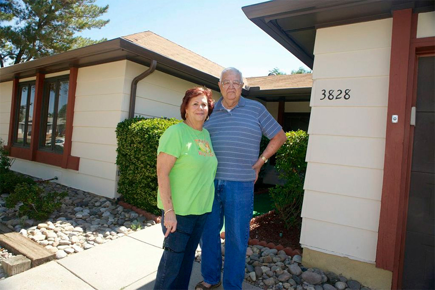
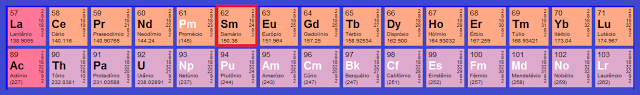
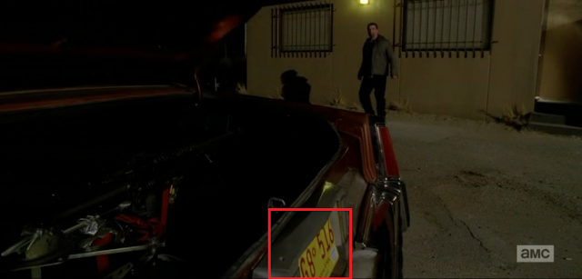
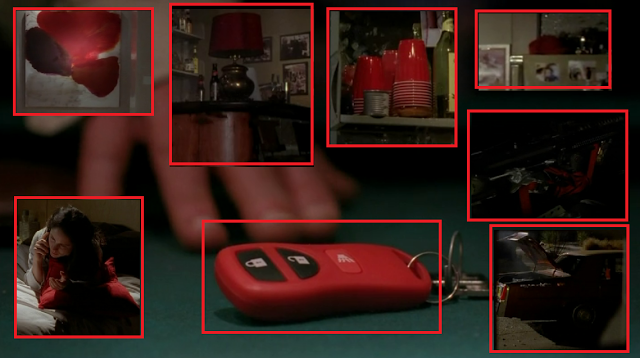

Curiosidades de Breaking Bad
Em 2018, a série Breaking Bad, considerada uma das melhores séries dramáticas de todos os tempos, completou
dez
anos desde a estreia.
Breaking Bad entrou para o Livro dos Recordes como o maior sucesso de crítica de todos os tempos, e
abocanhou
mais de 146 prêmios (só nos Emmys, foram 16) ao longo das cinco temporadas do programa.
Com a premissa de explorar uma história em que o protagonista torna-se o antagonista, Vince Gilligan
desenvolveu
uma trama que gira em torno de um pacato professor de química, Walter White.
O mundo quase foi privado da existência de Jesse Pinkman. O plano inicial do criador da série, Vince
Gilligan,
era de que o personagem de Aaron Paul morresse no final do episódio 9 da primeira temporada. A ‘salvação’ de
Jesse se deu graças à greve do sindicato dos roteiristas, entre 2008 e 2008, que fez a série produzir sete
episódios a menos. Quando a segunda temporada foi confirmada, Gilligan já havia mudado de ideia: além do
talento
de Aaron, o personagem havia se tornado imprescindível na trama.

A fachada da casinha suburbana dos White existe e há gente morando nela. Mais especificamente, uma senhora
chamada Fran, que vive lá desde 1973. Ela credita o resultado final que se vê nas telinhas como o produto de
“muita licença criativa” pelo departamento de produção de cenários.
Fran não se importa com a atenção que a casa recebe ou com as centenas de carros que estacionam em frente à
sua
garagem todos os meses. A famosa piscina no quintal, inicialmente, não faria parte da casa dos White.
 

Breaking Bad exibiu um total de 62 episódios, número corresponde ao elemento "Samário" na tabela periódica, que é utilizado para tratar o Câncer de Pulmão. O número de episódios não foi definido com base no Samário, mas a coincidência foi interessante.

A placa do carro onde Walter hospedava a M60 tem terminação "516", referência ao último episódio da série, 16º episódio da 5ª temporada.

Foram vistos objetos vermelhos, que representa perigo, principalmente onde os neonazistas foram mortos, na casa de Lydia, na M60 de Walter, e no controle de seu carro.
